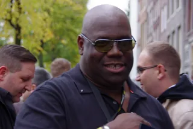
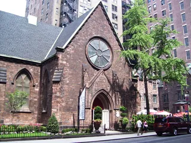

Festival guide, 2027
The best house music festivals in 2027
The main house music festivals compared by city, setting and size, from a park picnic in Chicago to a week on the Croatian coast, with the 2027 dates that are confirmed and the ones that are not.
A list meant for choosing.
House music began in Chicago, and two of the best house music festivals still take place there: ARC in Union Park at the end of summer, and the Chosen Few Picnic in Jackson Park in July. Detroit's Movement comes at the end of May, and Europe adds the Dutch city festivals and a week on the Croatian coast. This page compares the best house music festivals for 2027 by setting and sound, and shows which dates are confirmed.
How this list was chosen.
A festival is on this list when these three things are true:
- House music is the core of the programme, or a large and central part of it.
- It has run recently, and it has either published a 2027 edition or given no sign of stopping.
- It adds something the others lack: a different city, a different setting or a different size.
A date from the festival's own site is shown as confirmed. Where a festival has not yet announced 2027, the table gives its 2026 date as a guide.
House music festival dates for 2027 at a glance.
Early July is the crowded stretch. Love International runs on 7 to 13 July 2027, and the Chosen Few Picnic was on 11 July in 2026.
| Festival | Where | 2027 dates | Setting | Best for |
|---|---|---|---|---|
| DGTL | Amsterdam | 26 to 28 March | Former shipyard | The start of the season |
| Movement | Detroit | 29 to 31 May | Riverfront plaza | House and techno together |
| Love International | Tisno, Croatia | 7 to 13 July | Seaside site, boats | A week by the sea |
| Chosen Few Picnic | Chicago | Not announced (11 July in 2026) | City park | Where house began |
| Loveland | Amsterdam | 14 and 15 August | City park | A city park in August |
| ARC | Chicago | Not announced (4 to 7 September in 2026) | City park | Labor Day weekend |
| HRFST | Bunnik, near Utrecht | 2 October | Fort | A day in a fort |
| Soenda Indoor | Utrecht | Not announced (next: 21 November 2026) | Indoor hall | A winter date |
Which are the best house music festivals in the US?
Chicago and Detroit have three of the festivals on this list: ARC, the Chosen Few Picnic and Movement. For the music itself and where it came from, see the house music guide.
ARC, Chicago
ARC is held in Union Park, Chicago, over Labor Day weekend. The 2026 edition was on 4 to 7 September, and the 2027 dates have not been announced. It is for ages 18 and over. See the ARC guide.
Chosen Few Picnic, Chicago
The Chosen Few House Music Picnic is held in Jackson Park, on Chicago's South Side, and run by the Chosen Few DJs. The 2026 picnic was its 36th, on 11 July, with about 45,000 people. The 2027 date has not been announced. It is the festival on this list closest to where the music started.
Movement, Detroit
Movement is held in Hart Plaza, on the Detroit riverfront, over Memorial Day weekend. The 2027 edition is on 29 to 31 May. Detroit is the home of techno, and Movement books both techno and house. See the Movement guide.
This is DJ Minx in Movement's Live from Detroit series with Beatport, from the festival's own channel.
Which are the best house festivals in Europe?
In Europe, the list has two festivals in Amsterdam and a week on the Croatian coast.
DGTL, Amsterdam
DGTL is held at NDSM Docklands, a former shipyard area in Amsterdam Noord. The 2027 edition is on 26 to 28 March, the earliest date on this list. For the rest of the city's calendar, see the best music festivals in Amsterdam.
Loveland, Amsterdam
Loveland holds its summer festival in Sloterpark, on the west side of Amsterdam. The 2027 edition is on 14 and 15 August.
Love International, Croatia
Love International is held in Tisno, on the Croatian coast, on 7 to 13 July 2027, with five stages and two boats. It carries on from The Garden Festival, which first took place in Croatia more than 20 years ago. For the rest of the Tisno summer, see the best music festivals in Croatia.
Are there house music festivals in the UK?
None makes this list. In the UK, house at festivals mostly plays on stages inside wider events. The closest is Parklife in Manchester, at Heaton Park on 10 and 11 July 2027 for ages 17 and over, where house shares the bill with rap, pop and other dance music. For those festivals, see the best dance music festivals in the UK.
Which smaller house festivals are worth the trip?
Two smaller festivals in the Netherlands suit a particular taste.
HRFST, Netherlands
HRFST is a one-day festival at Fort bij Vechten, a fort at Bunnik, near Utrecht, with house alongside techno, melodic, trance and disco. The 2027 edition is on 2 October, for ages 18 and over.
Soenda Indoor, Utrecht
Soenda Indoor is held in the Werkspoorkathedraal in Utrecht, for about 6,000 people, ages 18 and over. The next edition is on 21 November 2026, and the 2027 date has not been announced.
Not on this list, and why.
These are festivals people ask about that fall outside the tests above.
- Defected Croatia. The last edition in Tisno was in summer 2026, and Defected has not named what replaces it in 2027.
- Bass Coast. The festival near Merritt, British Columbia, on 9 to 12 July 2027, books a wide range of electronic music, with house as one part of it. It is on the best EDM festivals in Canada.
How to choose.
Pick the city first. For the history of house, go to Chicago, for ARC or the Chosen Few Picnic. For a long weekend with techno alongside the house, choose Movement in Detroit. In Europe, choose DGTL or Loveland for a city festival in Amsterdam, and Love International for a week by the sea.
Then look at the calendar: the Chosen Few Picnic may land in the same week as Love International. Check dates with the festival before you book travel, because several of the 2027 dates above have not yet been published. For the records these festivals are built on, see house music classics.
House music festivals FAQ.
What are the best house music festivals?
ARC and the Chosen Few Picnic in Chicago, Movement in Detroit on 29 to 31 May 2027, DGTL and Loveland in Amsterdam, and Love International in Croatia on 7 to 13 July.
When is the Chosen Few Picnic 2027?
The 2027 date has not been announced. The 2026 picnic, its 36th, was on 11 July in Jackson Park, Chicago, with about 45,000 people.
Are there house music festivals in the UK?
None that passes this list's test, which is house at the core of the programme. Most UK house at festivals is on stages inside wider events, such as Parklife in Manchester on 10 and 11 July 2027.
Sources.
- 2027 dates from each festival's own site: Movement, Bass Coast, Parklife, Loveland, DGTL, Love International.
- Past editions: ARC, the Chosen Few DJs, Soenda.
- HRFST 2027: the organiser's page.
- Defected Croatia: a message from Defected's chief executive.
- ARC and Movement: this site's guide to each, linked above, which cites its own sources.
Continue reading
Read next.

Digging~12 min readBest Boiler Room Sets of All Time, Ranked and Measured
Eighteen sets picked for what happens in them, beside the ten most-watched, counted across 8,206 Boiler Room recordings.
Read article → Festivals~13 min read
Festivals~13 min readWhat Is Burning Man? The Event, the City and the Music
A participant-built city in the Nevada desert, with no central lineup or main stage, and the sound camps and art cars that programme their own music.
Read article → Rave spots~8 min read
Rave spots~8 min readBerghain: Panorama Bar, Sound and Residents
Berghain explained: the former power station, Panorama Bar upstairs, Halle am Berghain, the Kantine, and the Ostgut Ton label.
Read article →
Rave spots~11 min readBest Clubs in NYC: Nightclubs for House and Techno
Nowadays, Basement, Public Records, Good Room and Elsewhere: the best clubs in NYC for house and techno now, and the history from the Loft to Output.
Read article →